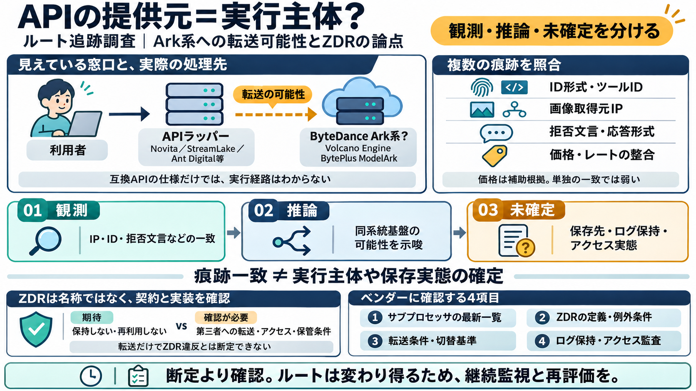

DeepSeek cuts V4-Pro AI model prices by 75%
At full price, before the promotional discount, V4-Pro costs $0.145 per million input tokens and $3.48 per million outpu…

At full price, before the promotional discount, V4-Pro costs $0.145 per million input tokens and $3.48 per million outpu…
DeepSeek is offering developers a 75% discount on V4 until May 5 and indicated that pricing for V4-Pro could decline in …
Novita AI hosts more than 120 LLMs across every major model family, including Qwen, DeepSeek, LLaMA, Mistral, Gemma, GLM…
# DeepSeek ID: Wx7nH1Ciri18 Website: www.deepseek.com Legal name: Markets Able Headquarters: New York, New York, United …
# OpenRouter ID: UOwIlqnkKmwJ Website: www.openrouter.ai Legal name: OpenRouter, Inc. Headquarters: New York, NY, United…